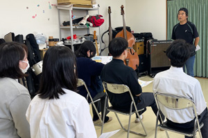
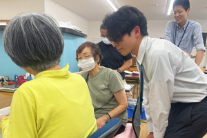
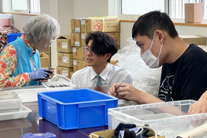
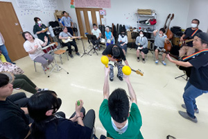

総合的な探究の時間（美術デザイン系３年生）
総合コース美術デザイン系の３年生は、１０月に開催予定の「障害者芸術祭2025」において、支援学校の生徒とのコラボレーション作品を制作する予定です。
この活動に先立ち、生徒たちは障がいのある方々の生活や活動に対する理解を深めることを目的として、５月２８日（水）、障害福祉サービス事業所・NPO法人音楽療法グループWALKSさんを訪問しました。
当日は、代表の高橋様より、施設で行われている支援の内容や利用者の方々の活動について詳しくお話をいただいた後、実際の生産活動の現場を見学させていただきました。
生徒たちは、利用者の方々が自分のスタイルで真剣に作業に取り組む様子に深い感銘を受けました。
また、見学の最後には、音楽活動に参加させていただき、利用者の皆さんとともに楽しい時間を共有しました。
生徒たちは、日々の活動の中にある喜びや工夫、そして「共に過ごす」ことの意味を肌で感じ取ることができたようです。
以下に、生徒たちの感想の一部を紹介します。
「行く前は、どこか堅苦しい雰囲気を想像していましたが、実際は皆さんがとても楽しそうに、自分のペースで作業されていて驚きました。
一人ひとりが自分に合ったやり方で仕事を進めており、社会の一員としての自覚を持って取り組んでいる様子が印象的でした。音楽活動では笑顔があふれ、全員でひとつのものを作り上げている一体感が感じられました。」
「鍵の部品の組み立て作業など、細かく大切な作業を一つひとつ丁寧に行っておられました。
間違いを減らすための工夫も随所に見られ、驚きとともに尊敬の念を抱きました。
音楽活動では、皆さんが本当に楽しそうで、毎日をいきいきと過ごされていることが伝わってきました。
今回の訪問は、私自身にとっても楽しく、学びの多い体験となりました。」
「自分でも気づかないうちに、「障がいのある人にはこう接すべき」という偏見を持っていたことに気づきました。
しかし、WALKSの皆さんは、それぞれの力を発揮しながら社会の中で役割を担っておられます。
特別な接し方をしなくても、お互いを尊重することで自然な関係が築けるのだと実感しました。」
「年齢や障がいの有無に関係なく、誰もが安心して過ごせる空間がそこにはありました。
音楽バンドの活動は音楽療法の一環でもあり、自己表現の場にもなっていることを感じました。
また、利用者の保護者の方がスタッフとして関わることで、相互理解がより深まっているというお話も印象的でした。
障がいがあるから「かわいそう」なのではなく、皆さんが毎日を前向きに、力強く生きている姿を見て、私の中の意識も大きく変わりました。」
この見学を通じて、生徒たちは障がいについての理解を深めるとともに、自らの価値観や社会との関わり方についても見つめ直す貴重な機会となりました。
今後のコラボレーション作品制作においても、今回の学びを大切にしながら、思いやりと創造力にあふれた表現活動を展開していくことを期待しています。
| ＜＜前のニュース | 次のニュース＞＞ |



